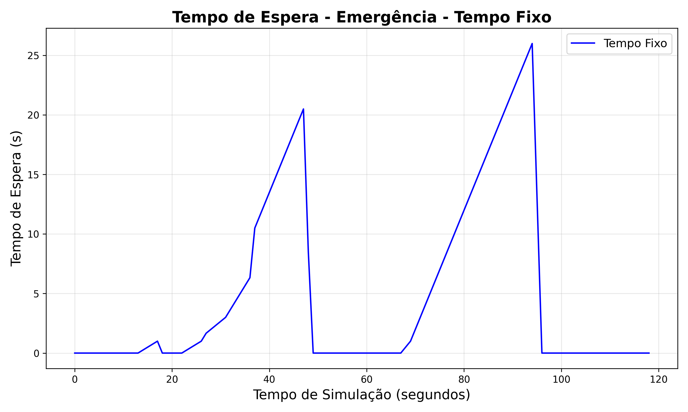
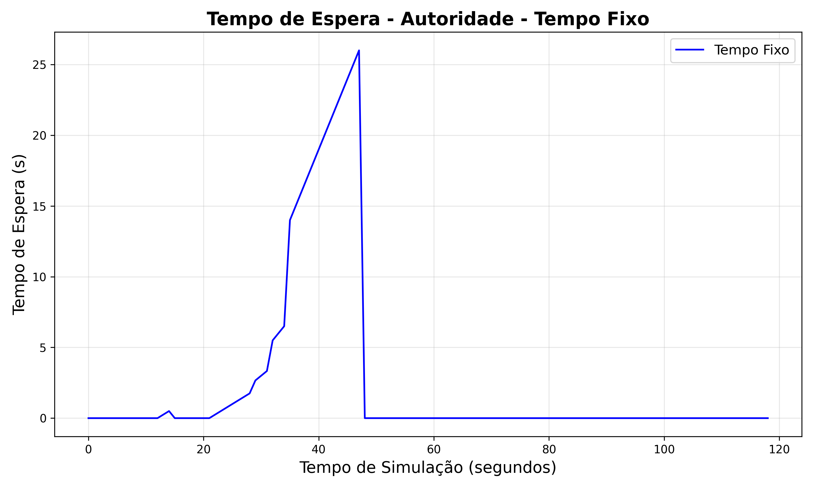
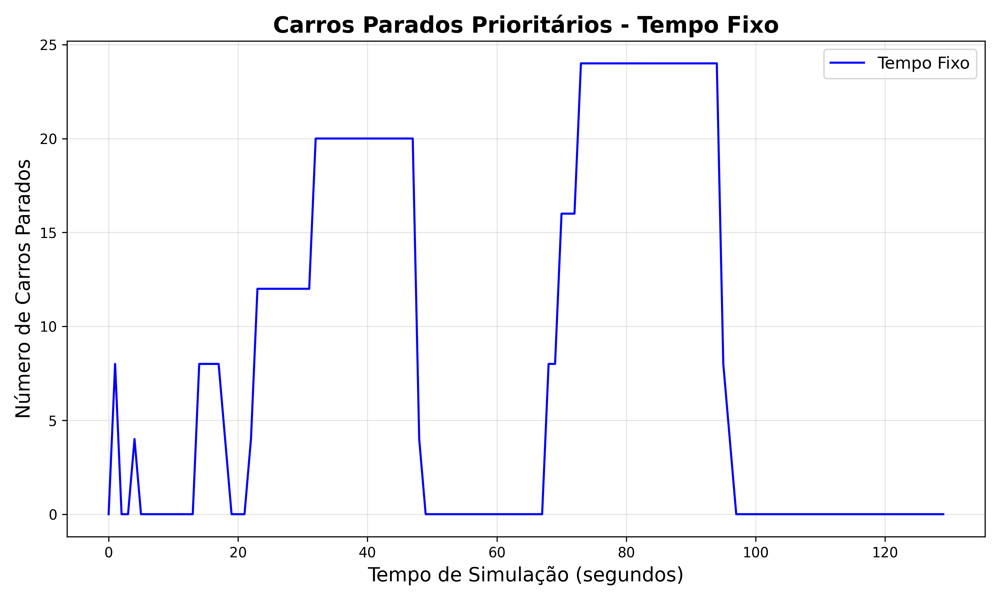
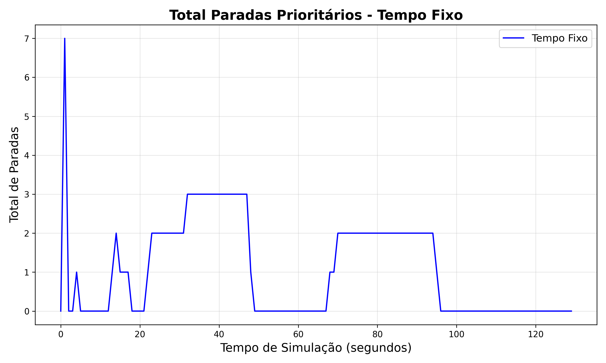
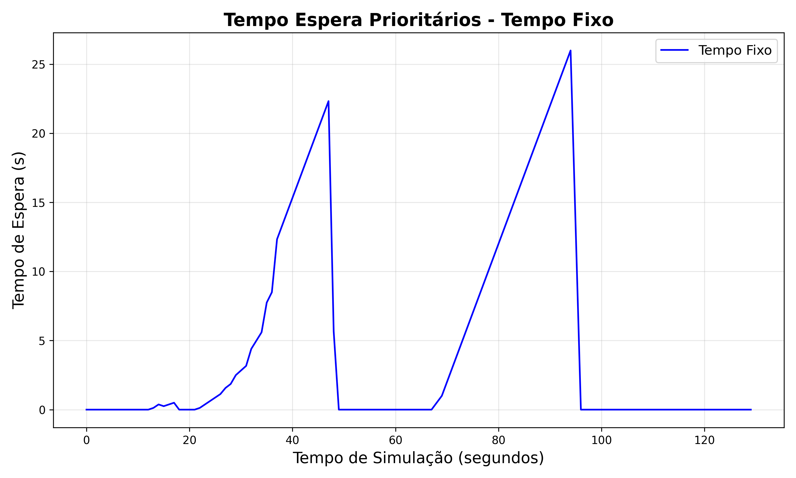
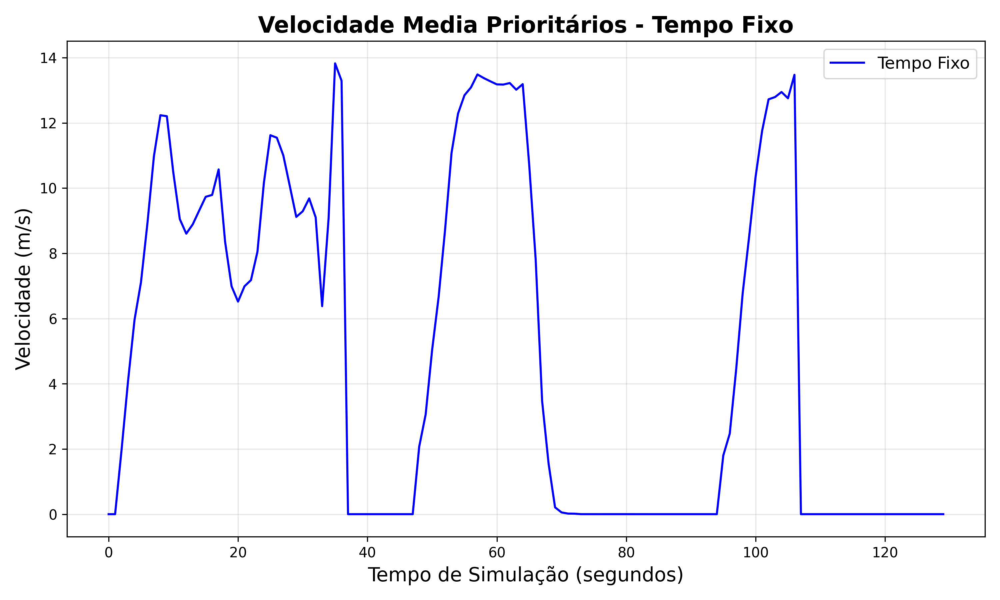

| Algoritmo | Média | Desvio Padrão | Máximo | Mínimo |
|---|---|---|---|---|
| Tempo Fixo | 4.92 | 7.41 | 26.00 | 0.00 |
Gráfico mostra a evolução ao longo do tempo para tempo de espera de emergências.
| Algoritmo | Média | Desvio Padrão | Máximo | Mínimo |
|---|---|---|---|---|
| Tempo Fixo | 2.48 | 6.38 | 26.00 | 0.00 |
Gráfico mostra a evolução ao longo do tempo para tempo de espera de autoridades.
| Algoritmo | Média | Desvio Padrão | Máximo | Mínimo |
|---|---|---|---|---|
| Tempo Fixo | 8.37 | 9.89 | 24.00 | 0.00 |
Gráfico mostra a evolução ao longo do tempo para carros parados prioritários.
| Algoritmo | Média | Desvio Padrão | Máximo | Mínimo |
|---|---|---|---|---|
| Tempo Fixo | 1.04 | 1.25 | 7.00 | 0.00 |
Gráfico mostra a evolução ao longo do tempo para total paradas prioritários.
| Algoritmo | Média | Desvio Padrão | Máximo | Mínimo |
|---|---|---|---|---|
| Tempo Fixo | 4.68 | 7.48 | 26.00 | 0.00 |
Gráfico mostra a evolução ao longo do tempo para tempo espera prioritários.
| Algoritmo | Média | Desvio Padrão | Máximo | Mínimo |
|---|---|---|---|---|
| Tempo Fixo | 4.87 | 5.28 | 13.82 | 0.00 |
Gráfico mostra a evolução ao longo do tempo para velocidade média prioritários.
